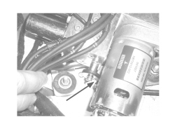
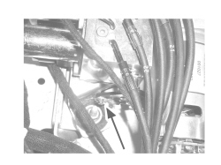

7030HG CHECK ON HYDRAULIC SYSTEM EMERGENCY RELEASE VALVE
- Path
- Test > 70 FITTINGS > 7030 SUN ROOF/GLASS PANEL > 7030H AUTOMATICALLY OPERATED HOOD > 7030HG CHECK ON HYDRAULIC SYSTEM EMERGENCY RELEASE VALVE
- Kind
- test / check procedure
- Applies to
- engines: 2.2 JTS, 3.2 JTS; all production periods; only with equipment: Spider
- Interactive page
- https://sloeber94.github.io/elrnDB-aBrrSpdr/en/#/946004034
Applies to: engines: 2.2 JTS, 3.2 JTS; all production periods; only with equipment: Spider
STEP | CHECK TO BE PERFORMED | REMEDIAL ACTION IF THE CHECK IS NOT OK |
|---|---|---|
1 | Valve position check Check that the valve is not in the oil pressure supply position (second diagram: normal operating position) | Place the valve as illustrated in the second diagram: normal operating position |

Valve in oil pressure discharge position

Valve in normal operating position